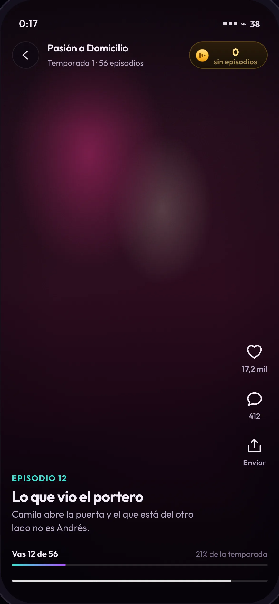
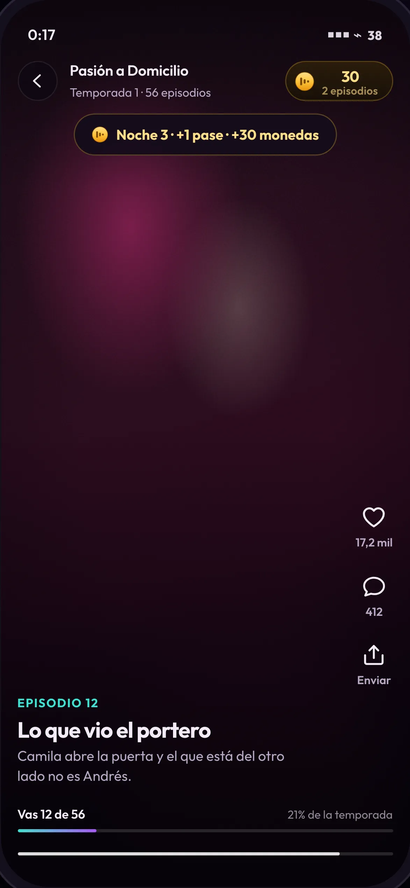
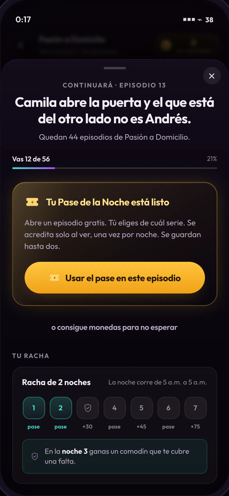
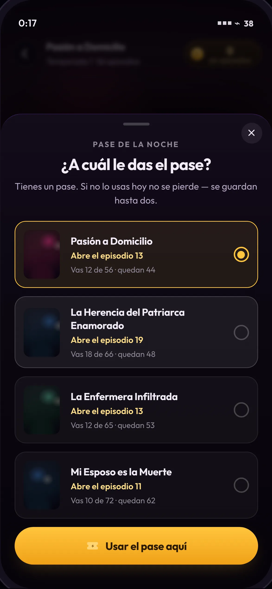
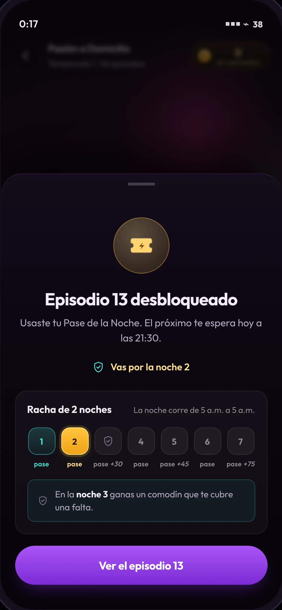
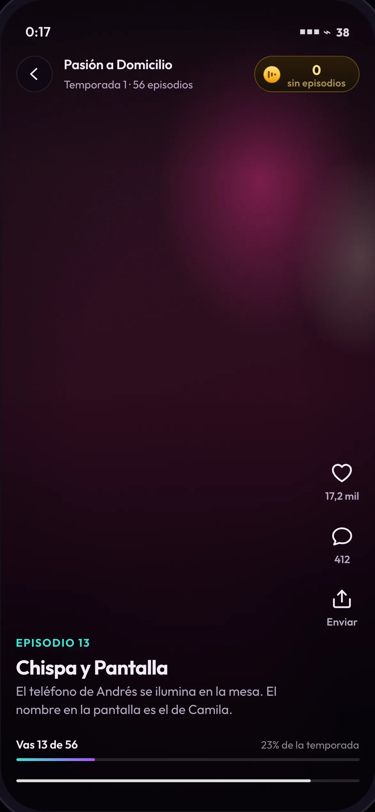

El invitado ve un episodio y la noche se acredita sola. Después llega al muro sin monedas y sale con el episodio abierto. En ningún momento reclama nada.

Media player
Player · episodio gratis
El saldo nunca viaja solo: el chip lleva siempre la traducción a episodios. Es la única huella permanente del metajuego dentro del core loop.
Vertical videoProgress indicatorCurrency balance
VideoTop barWallet chipAction railProgress barScrubber

Media player
El acuse de la noche
El único momento en que el metajuego aparece dentro del video, y dura dos segundos. Al terminar el episodio se acredita la noche, el pase y el bono — sin botón. Acreditar en silencio habría dejado el metajuego invisible otra vez, que es el defecto que este trabajo corrige.
Silent accrualToastCurrency balance
VideoToastWallet chipProgress bar

Paywall
Muro · el Pase está listo
Orden deliberado: la historia, dónde estoy, lo gratis, lo pago, la racha. Un muro que abre con precios enseña que el sistema es una tienda.
Bottom sheetReward claimStreakProgress indicatorCliffhanger
Bottom sheetHeadlineProgress barReward cardPrimary buttonText buttonStreak strip

Selection
Elegir a qué serie va el pase
El corazón pedagógico: obligar a elegir con un recurso escaso enseña la economía por uso, no por explicación.
Single selectScarcityCross-content discovery
Bottom sheetRadio listThumbnailProgress labelPrimary button

Confirmation
Desbloqueado · la racha avanza
La recompensa se entrega en el mismo gesto que resuelve la necesidad. La noche 3 dispara el comodín.
Reward revealStreak advanceMilestone unlock
Bottom sheetMedalReward linesStreak stripPrimary button

Media player
Player · episodio 13 abierto
El regreso al loop es inmediato: un toque desde la celebración, sin pantallas intermedias.
Vertical videoProgress indicator
VideoWallet chipProgress bar